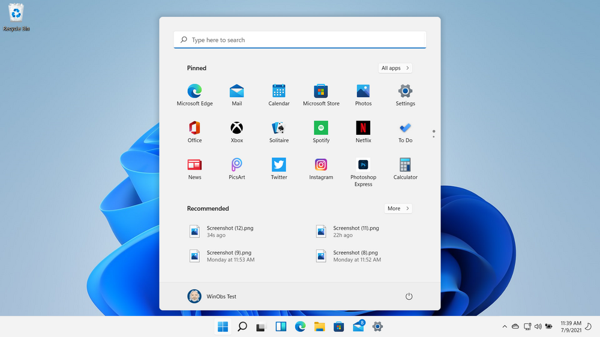
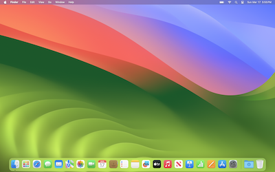
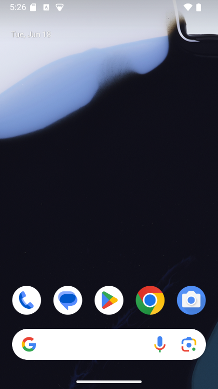

Systemy operacyjne
Windows
 Microsoft Windows – rodzina systemów operacyjnych stworzonych przez firmę Microsoft. Systemy rodziny Windows działają na telefonach, smartfonach, serwerach, systemach wbudowanych oraz na komputerach osobistych, z którymi są najczęściej kojarzone.Prezentację pierwszego graficznego środowiska pracy z rodziny Windows firmy Microsoft przeprowadzono w listopadzie 1984. Wówczas była to jedynie graficzna nakładka na system operacyjny MS-DOS, powstała w odpowiedzi na rosnącą popularność graficznych interfejsów użytkownika, takich jakie prezentowały na przykład komputery Macintosh. Nakładka, a później system operacyjny Windows po pewnym czasie zdominowała światowy rynek komputerów osobistych.
Pierwszym stabilnym wydaniem był Windows 1.01. Windows 1.00 był wersją beta, nigdy nie wydaną.
macOS
 macOS (dawniej OS X, a także Mac OS) – rodzina uniksowych systemów operacyjnych produkowanych i rozprowadzanych przez Apple Inc. Dostępny oficjalnie jedynie dla komputerów Macintosh, instalowany fabrycznie na nich od 2002 roku. 13 czerwca 2016 roku na WWDC została ogłoszona zmiana nazwy na macOS w związku z potrzebą unifikacji nazw używanych przez Apple dla swoich systemów operacyjnych (iOS, watchOS, tvOS).macOS jest zbudowany na podstawie dawnego systemu NeXTStep z drugiej połowy lat 80., wykupionym przez Apple wraz z producentem tegoż systemu NeXT w 1996 r. Jest on następcą systemu Mac OS 9, wydanego w 1999 r. i ostatniej wersji „klasycznego” Mac OS, który był głównym systemem komputerów Macintosh od 1984 roku.
macOS oryginalnie działał jedynie na Macach o architekturze PowerPC. W 2006 wydano pierwszą wersję dla nowych Maców o architekturze x86 – Mac OS X 10.4. W 2005 roku wydano pierwszą wersję w pełni zgodną z Single UNIX Specification w wersji trzeciej – Mac OS X 10.5, działający zarówno na Macach PowerPC i x86 z pomocą technologii zwanej Universal binary, czyli formatu plików wykonywalnych działających na obu architekturach. 10.6 Snow Leopard to ostatnia wersja, która obsługuje programy dla procesorów PowerPC przy użyciu narzędzia Rosetta. Mac OS X 10.7 przestaje również obsługiwać komputery o architekturze 32-bitowej, ograniczając się do procesorów 64-bitowych.
Pierwszą opublikowaną wersją systemu był Mac OS X Server 1.0 z 1999 roku i Cheetah (wersja desktopowa) wydany 24 marca 2001 roku. Poszczególne wydania, do wydania 10.8 były nazywane nazwami pochodzącymi od wielkich kotów, np. OS X 10.8 nosi nazwę handlową Mountain Lion, czyli puma płowa. Obecnie nazwy systemów macOS pochodzą od parków krajobrazowych w Kalifornii, np. macOS Sierra. Wersja serwerowa, OS X Server technicznie nie różniła się wiele od OS X – posiadała jedynie wiele wbudowanych aplikacji serwerowych. Obecnie, czyli od wersji Lion nie ma już możliwości zakupu OS X Server osobno – jest on dostępny jako pakiet aplikacji do macOS, a także ładowany do wersji serwerowych Maców Mini oraz Pro.
iOS, system firmy Apple działający na urządzeniach przenośnych iPhone, iPod Touch, oraz Apple TV drugiej i trzeciej generacji został stworzony w oparciu o macOS, z którym to dzieli jądro i wiele mechanizmów działania, jednak aplikacje dla macOS są tworzone za pomocą Cocoa, a dla iOS za pomocą Cocoa Touch dostosowanego do ekranów dotykowych.
Linux
 Linux – rodzina uniksopodobnych systemów operacyjnych opartych na jądrze Linux. Linux jest jednym z przykładów wolnego i otwartego oprogramowania (FLOSS): jego kod źródłowy może być dowolnie wykorzystywany, modyfikowany i rozpowszechniany.
Linux – rodzina uniksopodobnych systemów operacyjnych opartych na jądrze Linux. Linux jest jednym z przykładów wolnego i otwartego oprogramowania (FLOSS): jego kod źródłowy może być dowolnie wykorzystywany, modyfikowany i rozpowszechniany.
Od kwietnia 2017 roku Android (z zaadaptowanym jądrem Linuxa) oficjalnie jest najpopularniejszym systemem operacyjnym na świecie.
Pierwsza wersja jądra Linux została udostępniona publicznie 17 września 1991 dla architektury komputera PC, wykorzystującego mikroprocesor o architekturze IA-32. Do jądra dołączono narzędzia systemowe zwane też „Development Kit” oraz biblioteki z projektu GNU, aby otrzymać nadający się do użytku system operacyjny. Z tego powodu powstała też alternatywna nazwa kompletnego systemu: GNU/Linux. Jest udostępniany w formie dystrybucji Linuksa, składających się z jądra (niekiedy zmodyfikowanego w stosunku do oficjalnej wersji) i zestawu pakietów oprogramowania dobranego do różnorodnych wymagań. Dystrybucje zawierają głównie oprogramowanie na licencjach FLOSS, jednak najczęściej zawierają też lub pozwalają na doinstalowanie pewnej liczby programów na licencjach własnościowych.
Jednym z zastosowań Linuksa są środowiska serwerowe, dla których komercyjne wsparcie oferują firmy komputerowe, jak IBM, Oracle, Dell, Microsoft, Hewlett-Packard, Red Hat i Novell. Linux instalowany jest na różnorodnym sprzęcie komputerowym, np. komputerach biurkowych, superkomputerach i systemach wbudowanych, jak telefony komórkowe, routery oraz telewizory (np. LG, Samsung).
Android
 Android – system operacyjny z jądrem bazującym na Linuksie dla urządzeń mobilnych takich jak telefony komórkowe, smartfony, tablety (tablety PC) i netbooki. W 2013 roku był najpopularniejszym systemem mobilnym na świecie.Główna część systemu jest otwartym oraz wolnym oprogramowaniem. Projekt ten nazywany jest Android Open Source Project (AOSP). W skład projektu wchodzą jądro oraz niektóre inne komponenty, które zaadaptowano do Androida. Opublikowane zostały one na licencji Apache 2.0 oraz GNU GPL (samo jądro Linux). Android nie zawiera natomiast kodu pochodzącego z projektu GNU. Cecha ta odróżnia Androida od wielu innych istniejących obecnie dystrybucji Linuksa. Początkowo był rozwijany przez firmę Android Inc. (kupioną później przez Google), następnie przeszedł pod skrzydła Open Handset Alliance.
Android zrzesza przy sobie dużą społeczność deweloperów piszących aplikacje, które poszerzają funkcjonalność urządzeń. W sierpniu 2014 było dla tego systemu dostępnych ponad 1,3 miliona aplikacji w Google Play (wcześniej Android Market).
Według danych serwisu StatCounter z kwietnia 2017 roku Android miał największe udziały na rynku systemów operacyjnych.